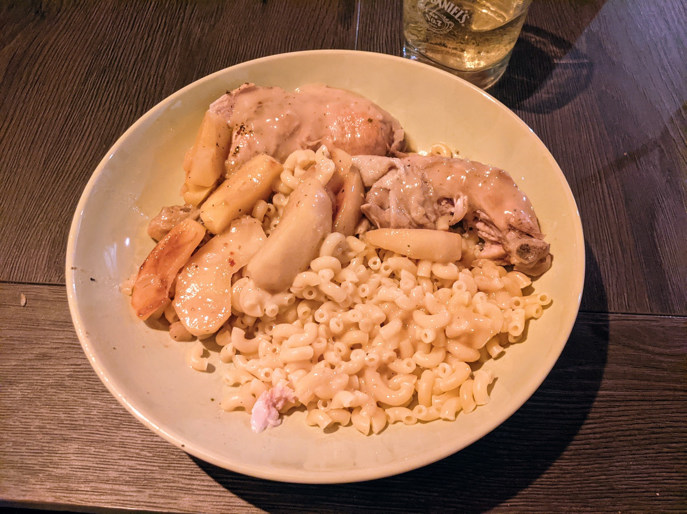

Poulet au cidre

Pour 4-5 personnes :
- Un poulet coupé en morceaux
- 2 oignons
- Une échalote
- Une bouteille de cidre brut (1L minimum)
- Des pommes (golden, en théorie) (5-6 si on veut que ça soit l'accompagnement principal, 2 sinon)
- Un peu de farine
- (facultatif) Une cuillère à soupe de crème épaisse
- (facultatif) Un peu de calvados
- Huile, beurre/margarine
- Faire dorer les morceaux de poulet, les oignons et l'échalote dans un mélange beurre/huile, au fond d'une cocotte.
- Le cas échéant, faire flamber le tout au calvados.
- Lorsqu'ils ont pris une belle couleur, saupoudrer de farine, mélanger un peu, recouvrir de cidre.
- Laisser mijoter à feu doux pendant une quarantaine de minutes.
- Faire revenir les pommes coupées en tranches dans du beurre, les rajouter dans la marmite en fin de cuisson.
- Si on mange ça avec des pâtes, rajouter de la crème épaisse dans la sauce et mélanger pour obtenir une belle texture.